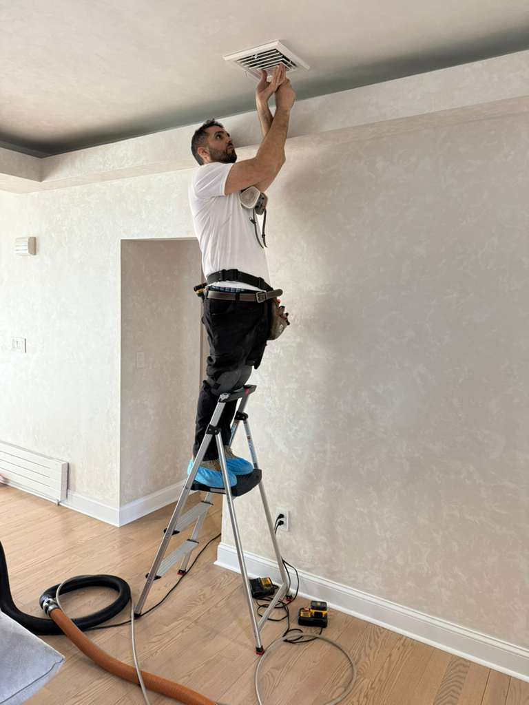
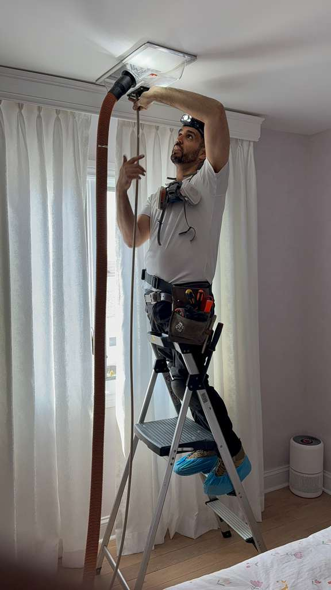
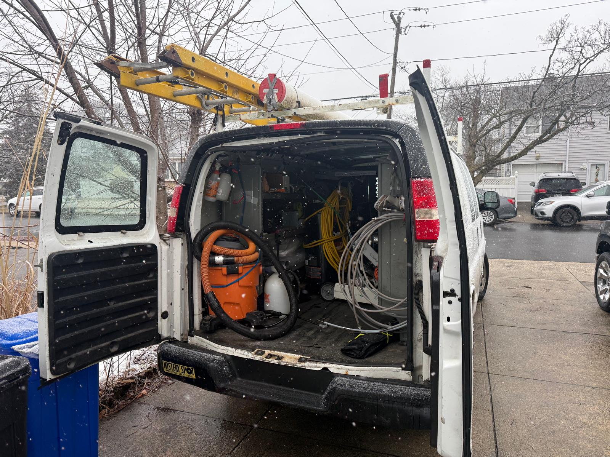
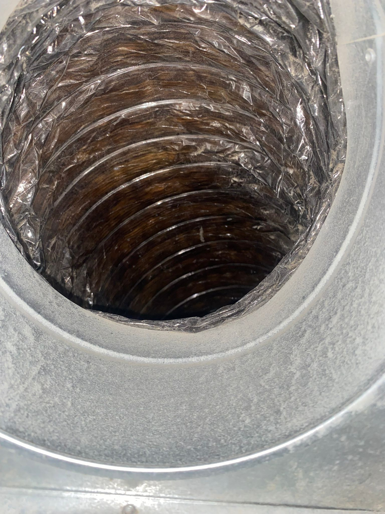
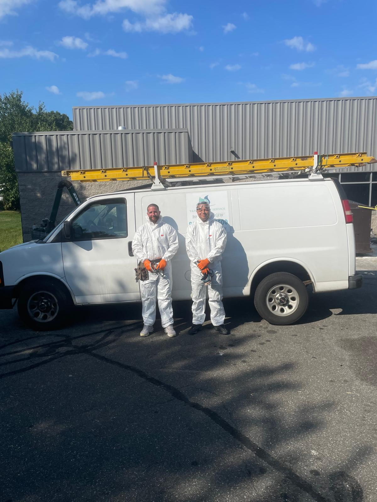
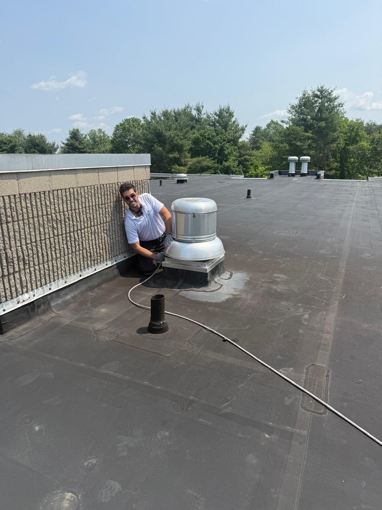
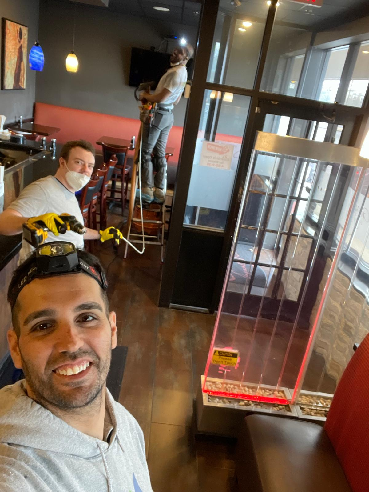

Duct Cleaning in Valley Stream, NY
Professional air duct cleaning, dryer vent cleaning, and HVAC sanitization for Valley Stream homes and businesses.
Trusted Air Duct Cleaning Services in Valley Stream
Valley Stream sits at the southwestern edge of Nassau County, right along the Queens border, making it one of the most accessible communities on Long Island. Home to the popular Green Acres Mall and surrounded by a mix of charming older neighborhoods and newer developments, Valley Stream offers residents the best of suburban living with easy access to New York City. However, the area's diverse housing stock, which includes everything from pre-war bungalows to mid-century colonials and modern builds, means that air duct systems vary widely in age and condition.
At Duct Cleaning Nassau County, we provide Valley Stream homeowners with professional air duct cleaning tailored to their home's specific needs. Older ductwork in Valley Stream's pre-war and post-war homes can accumulate significant amounts of dust, mold spores, and allergens over the decades. Even newer homes benefit from regular duct cleaning to remove construction debris, pet dander, and everyday pollutants. Our source-removal process uses powerful HEPA-filtered equipment to thoroughly clean every duct run, register, and return in your system.
As a licensed (HIC #0660487), insured, and family-owned business, we are committed to providing Valley Stream residents with honest pricing, professional service, and results you can feel. Whether you live near Hendrickson Park, along the LIRR corridor, or anywhere in between, we are ready to help you breathe cleaner air.
Our Services in Valley Stream
- Air Duct Cleaning: Thorough source-removal cleaning of all supply and return ducts, registers, and grilles in your Valley Stream home.
- Dryer Vent Cleaning: Professional lint removal to eliminate fire hazards and restore dryer efficiency.
- UV Light Installation: Germicidal UV-C lights installed in your HVAC system to continuously destroy mold, bacteria, and airborne viruses.
- Sanitization & Disinfection: Non-toxic botanical treatment applied inside your ductwork to kill 99.9% of microbial contaminants.
- HVAC Cleaning: Complete cleaning of heating and cooling components including evaporator coils, blower motor, and drain pan.
- Commercial Duct Cleaning: Professional-grade duct cleaning for Valley Stream businesses, retail spaces near Green Acres Mall, and office buildings.
Why Valley Stream Homeowners Choose Us
- Licensed and insured with HIC #0660487 for your peace of mind
- Experienced with the wide range of home styles and duct systems found throughout Valley Stream
- Free estimates with transparent, upfront pricing
- Family-owned and locally operated in Nassau County
- Powerful HEPA-filtered equipment for the cleanest results possible
- Flexible scheduling Sunday through Friday to accommodate your busy routine

Complete Air Quality Solutions


Dryer Vent Cleaning
Prevent fires and improve efficiency with professional dryer vent cleaning.
Learn More →

Sanitization & Disinfection
Non-toxic botanical treatment that eliminates 99.9% of contaminants.
Learn More →

Commercial Services
Professional duct cleaning for offices, restaurants, and commercial buildings.
Learn More →Ready for Cleaner Air in Valley Stream?
Call now for a free estimate. We serve all of Valley Stream and surrounding Nassau County communities.